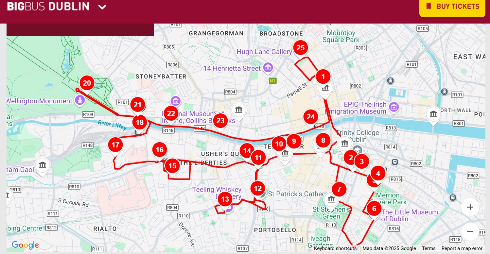

Discover the best of Dublin on our Red Route day tour. Journey through the heart of Dublin, with stops at 25 different landmarks and attractions. Hop off to explore from any stop, or stay on board to relax and see the sights unfold before you.

City Sightseeing Tours Map Discover one of the world’s friendliest cities from the top of one of our double-decker tourist buses. With so much to see and do in Dublin, there’s no better way to explore the Irish capital than hopping on and off a city tour at any of the bus stops along the route. Buy your tickets online and let City Sightseeing take you around the streets of this fascinating city which always has another side to show you. Fuel your wanderlust; start planning your trip to Ireland today and see for yourself why visitors keep coming back for more.
Hop-on and hop-off to discover Dublin’s rich history and culture?
Why not hop off at the Writers Museum? A UNESCO City of Literature,
Dublin has been home to some of the greatest writers. Joyce, Wilde, Stoker, Shaw and Beckett.
All hailed from here. Without Dublin, there’d possibly be no Dracula or Dorian Gray.
If you feel like delving into the world of art, hop off at IMMA, the Irish Museum of Modern Art.
Here, you’re guaranteed to see something new and different that will really get you thinking. From Rauschenberg to Lichtenstein,
it’s got modern art covered.
From Kilmainham Gaol, the prison where Ireland’s most notorious political and military leaders were held,
to a replica of Jeanie Johnston, the ship on which the Irish emigrated to America, Dublin is rich in history.
Hop off at the renowned historical sites and the National Museum of Ireland and discover the events that have shaped the city of Dublin.
DoDublin Bus Tours
Original Route

Docklands Route

Dublin is an old city, with a settlement established on the banks of River Liffey over 1,000 years ago. The area we know today as The Liberties is one of the city’s oldest neighbourhoods, its fascinating history intricately connected to that of the wider city.
Dublin grew from two small settlements in the 9th century (Ath Cliath – or ‘the ford of hurdles’ and Dubhlinn – the ‘black pool’). The settlement really gained strength and prominence under the Norsemen or Vikings who arrived from about 840. The Vikings built a port here in the estuary of the River Liffey and it became their most important trading post in Ireland. In time, Norse Dublin gave way to new invaders – the Anglo-Normans – and Dublin became a small city, surrounded by a large wall and included a castle, a cathedral, parish churches and a complex system of local government run by a Corporation and guilds. Today, the modern city has far outgrown its medieval origins, but there are still vestiges of the past there to uncover.